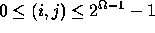
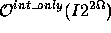
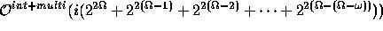
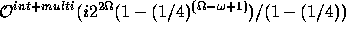
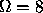
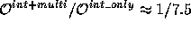
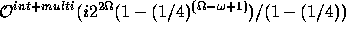
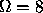
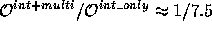

The integration process is similar to that carried out in the monoresolution case, except that we start at the coarsest resolution, and pass the disparity map to the next finer resolution as:
for ,
The multiplicative factor 2 corresponds to upsampling by 2. There are two
main advantages of the multiresolution approach. One is that we have a better initial
disparity estimate at the finest resolution, and second significantly faster
computation:
Let I be the number of iterations required in the absence of multiresolution
then  is the computational complexity of the integration algorithm.
If i is the number of iterations required at each resolution then the computational
complexity of the algorithm which involves multiresolution is

where  is the coarsest resolution. Using the geometric series sum
we have the order of complexity as .
Putting typical values of I=100, i=10, , , we have
.
is the coarsest resolution. Using the geometric series sum
we have the order of complexity as .
Putting typical values of I=100, i=10, , , we have
.
We experiment with two cases in the multiresolution framework.